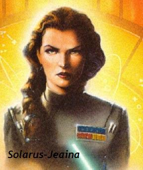

Forums galactiques > Taverne galactique : lieu de discussion informel > IZakaYa - L'alcool encore et toujours...
Pages : 1 2 ... 292 293 294 ... 308 309
| lara Réputation à la taverne : 87  03/06 ETU 14:49 | Score : 0 Détails enfin vous voila!!!!
nous commencions a desesperé de vous trouver ici... du Rhum également? | ||
| qui-gon Réputation à la taverne : 90  03/06 ETU 15:05 | Score : 0 Détails Je vais guoûter votre Rhum Lara...Vous m'en servez un verre garçon ?!
| ||
| lara Réputation à la taverne : 87 03/06 ETU 15:09 | Score : 0 Détails je suis ravie.....
vous me direz ce que vous en pensez le rhum pyrossien est une boisson à la mode chez nous!!! | ||
| captn Réputation à la taverne : 65  03/06 ETU 15:12 | Score : 1 Détails Garçon...? Mais a qui parlait il, il n´y avait pas de garçon dans les parage... mais oui je me souvient... on appellait les serveurs "garçon" autrefois...
Voilà voilà monsieur .... Pfff... j´éspère que je serai bientôt elu serveur, tant que je ne le suis pas je ne peu pas servir des reserves de l´IZakaYa mais je doit puiser dans ma reserve personnel... sniff. | ||
| qui-gon Réputation à la taverne : 90 03/06 ETU 15:16 | Score : 1 Détails je vous considère comme serveur Captn, mais désolé, vu mon âge, j'ai encore les vieilles habitudes d'antant.
Famaux votre rhum, lara.. | ||
| lara Réputation à la taverne : 87 03/06 ETU 15:23 | Score : 0 Détails je savais que ça vous plairez cher commandant
j'ai quelques fûts en reserve dans mon palais je me ferais une joie de vous en faire profiter^^ | ||
| Solarus-Jeaina Réputation à la taverne : 25  03/06 ETU 15:28 | Score : 0 Détails Hummm, un verre de lait !
Je m'invite ! | ||
| captn Réputation à la taverne : 65 03/06 ETU 15:39 | Score : 0 Détails voilà, voilà...
Mais ou est ce fichu Araskel qui n´est jamais là quand il doit voir quelque chose... Sa ne sert a rien de faire sauter toutes les bataille juste pour joué le serveur ici, si personne ne le remarque... | ||
| ash Réputation à la taverne : 165  03/06 ETU 15:43 | Score : 1 Détails Hou, il y a du monde ici. Si ça continue va y avoir plus de clients que de cheveux sur ma tête.(Ah oui c'est vrai je n'en ai pas(de cheveux).
Alors s'il y a encore du service, je vais prendre une vodka bien forte.Au moins il y a pas besoin de donner de pourboir. | ||
| captn Réputation à la taverne : 65 03/06 ETU 15:45 | Score : 2 Détails tout de suite...
pour le pourboir c´est une politesse a faire ou a laisser... | ||
| Solarus-Jeaina Réputation à la taverne : 25 03/06 ETU 15:50 | Score : 1 Détails C'est trop demandé un verre de lait ?
| ||
| ash Réputation à la taverne : 165 03/06 ETU 15:59 | Score : 0 Détails Et un ptit pourboir de 10ma, un !
| ||
| Groochie Réputation à la taverne : 709  03/06 ETU 16:27 | Score : 4 Détails Tout à coup le ciel s’obscurcit, le tonnerre grondait et des éclaires de feux frappaient le sol en dehors de l’Izakaya.
Puis, la porte des toilettes s’ouvrit et un homme avec un manteau à capuche entra (sortie ??) dans le bar. Tout le monde le regardait sans dire un mot, puis quelqu'un se risqua à parler : « Qui êtes vous ??....... » L’homme ne dit aucun mot, mais il sortie une lettre de sa poche et la leva en l’air. Puis il parla : « Votre fin est proche.......... » Il montra du doigt le niark : « Toi,............le boulet..............tu n’est pas digne de recevoir les clefs de la caisse de l’Izakaya, en revanche, tu peut nettoyer les chiottes si le cœur t’en dit........ » Puis il montra le dragon alcoolique : « Toi,.............le pochtron......................tu n’est pas digne de recevoir les clefs de la réserve................en revanche, tu peut consommer comme tout le monde.......... » Puis, quelqu’un repris : « Mais qui est tu ?? » « Je suis..............................LE NOUVEAU SERVEUR DE L’IZAKAYA ET JE PAYE UNE TOURNEE !!!!!!!! » L’homme enleva son manteau, c’était Groochie. Il tenait dans ça main le contrat que Alnia lui avait signé pour lui remettre le poste. (quesque vous croyez?? Que Alnia allait donner le poste à un boulet reconnut??) | ||
| qui-gon Réputation à la taverne : 90 03/06 ETU 17:34 | Score : 1 Détails Aller, c'est ma tournée ! A ta santé Groochie !
| ||
| roomi Réputation à la taverne : 158  03/06 ETU 19:14 | Score : 1 Détails AH BEN ,quand meme ,je te retrouve lara!
oooh puuûnaise!! ,mais : "tu es l'chat qui tombe aaaaaà piiic ,tu es le chat qui vient de looouuing et dans l'izakaya on ne boit jamaaaiiiiis de jaaajaaaaa!" CA VA GROOCHIE? CA MARCHE AVEC ALNIA HA! HA! HA! ?ELLE A LE PÄNTALON HA!HA!HA!HA!HA! Vers lara: Mmmmmm ma puce ,j'ai un truc à te monter dans le fond du couloir au 1er!! | ||
| Mendax Réputation à la taverne : 201  03/06 ETU 19:18 | Score : 0 Détails Après l'arrivée du Commandant Roomi, le Commandant Mendax s'approcha de lui,
Et lui parla. Mon vieil ami ROOMI ! Toujours aussi drôle ! HEIN ! Tu m'épateras toujours mon vieux ! | ||
| roomi Réputation à la taverne : 158 03/06 ETU 19:19 | Score : 0 Détails bAH ?CA FAIT PLAISIR AUSSI MON PETIT mendax ,ça va les amours?
Plus bas: Dis? t'as vu ash ,depuis qu'il est journaliste ,il est devenu intelligent!!! ha!ha!ha! | ||
| Mendax Réputation à la taverne : 201 03/06 ETU 19:30 | Score : 1 Détails Boff !
Je dois être à mon 9éme râteau ou.................. ____________________________________________________________ Et le commandant Mendax commença à compter sur ses doigts. Et après un long moment de calcul, il prononça : ____________________________________________________________ Je sais plus !!!!! Et si on parlait d'autre chose ? | ||
| ash Réputation à la taverne : 165 03/06 ETU 19:35 | Score : 0 Détails Et alors, ça papote ça papote et ça boit tellement que ça oublie sa femme.
Mendax, tu es sur de n'avoir personne en vue, comme compagne ? Réfléchis bien ! | ||
| Mendax Réputation à la taverne : 201 03/06 ETU 19:39 | Score : 1 Détails Salut Ash.
Mais où est passé Roomi et Lara ? Ah oui ! Ils sont partis au fond du couloir au 1er, pour que Roomi montrer à Lara........ Ash ! Avec moi ! On a un nouveau reportage pour Avis à la population ! |
Pages : 1 2 ... 292 293 294 ... 308 309
Forums galactiques > Taverne galactique : lieu de discussion informel > IZakaYa - L'alcool encore et toujours...